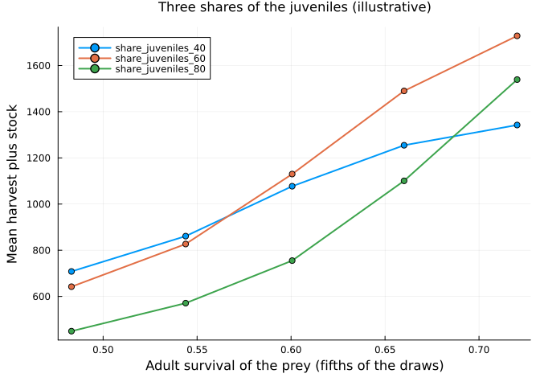
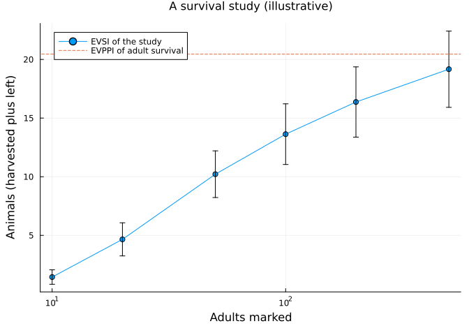

Which stage to harvest, and how hard: a decision under uncertain vital rates
Simon Frost
- The question
- A managed community
- Uncertain vital rates
- Running the model over draws, actions and replicates
- Payoffs and gains over no harvest
- The decision under several rules
- What is it worth to know the rates?
- A study of adult survival
- What the verbs did
- What is measured and what is assumed
- Reference
ENV["GKSwstype"] = "100"
using MatrixCommunityModels
using DecisionAnalysis
using Printf, Random, Statistics
using PlotsThe question
A prey species is to be harvested for twenty years. It has a predator, and its vital rates are known only roughly. Which stage should be taken, juveniles or adults? Should the harvest be a share of the stage or a fixed number each year, and how large? Would it pay to cull the predator as well? And before deciding, which vital rate would be worth measuring?
The model is the predator-prey matrix model of Barraquand & Gimenez (2019), built in vignette 23: two species with juveniles and adults, counted each year just before breeding. Adult predators lower the survival of newborn prey, juvenile prey raise the fecundity of predators, and adult prey lower their own fecundity.
Every number of the decision problem is illustrative. The parameter values of the paper are simulation values that its authors chose to resemble slow-lived birds and mammals; they are not estimates for any population. The uncertainty about them, the harvest rates on offer and the study at the end are made up here to show the method. No cost appears anywhere: outcomes are counted in animals.
The analysis is done by DecisionAnalysis.jl. This package does not depend on it. Loading both, on Julia 1.12 or later, activates an extension that lets DecisionAnalysis.jl run a ManagedCommunity, which is defined here and works without it.
A managed community
A ManagedCommunity holds three things a decision needs of a model: a way to build the model from named parameters, an action, and the named outcomes to read off a run.
The parameters are four rates of the prey: adult survival, the effect of adult predators on the survival of newborn prey (α4 of the paper), and the intercept and slope of prey fecundity (α7 and α8; the slope is the crowding of adults). build says where each name goes in the model, and returns the community, its initial state and one environment per year:
B = BARRAQUAND_GIMENEZ_2019
function build(θ)
alpha = (B.alpha[1:3]..., θ.predation, B.alpha[5:6]..., θ.prey_fecundity, θ.prey_crowding)
survival = (prey = θ.prey_survival, predator = B.adult_survival.predator)
model = predator_prey(merge(B, (alpha = alpha, adult_survival = survival)))
return (community = model.community, n0 = model.n0, envs = fill(nothing, 20))
end
published = (prey_survival = 0.6, predation = -0.025, prey_fecundity = 2.0, prey_crowding = -0.005)(prey_survival = 0.6, predation = -0.025, prey_fecundity = 2.0, prey_crowding = -0.005)The outcomes of a run are counts of animals: the prey harvested over the twenty years, the prey and the predators alive at the end, and the predators culled. collapsed marks a run that ends with fewer than ten prey (the threshold is illustrative). A run records what the action removed from each state at each census in removed:
function tally(run)
layout = run.trajectory.community.layout
return (; harvested = sum(run.removed[:, layout[:prey]]),
prey = abundance(run.trajectory, :prey)[end],
predators = abundance(run.trajectory, :predator)[end],
culled = sum(run.removed[:, layout[:predator]]),
collapsed = abundance(run.trajectory, :prey)[end] < 10)
end
managed = ManagedCommunity(build; parameters = published, outcomes = tally, demographic = true)ManagedCommunity(4 parameters set; action none; demographic)With demographic = true individuals are whole: each survives by chance and the number of young is Poisson, as in the stochastic model of the paper.
An action is a named tuple. remove = (:prey, :adult) => 0.2 removes a fifth of the adult prey at each census, after the year’s survival and births; with whole individuals each adult is taken with probability 0.2. take = (:prey, :juvenile) => 40 is a quota: forty juveniles a year, or all of them if there are fewer. Nothing in this needs a decision package:
light = ManagedCommunity(managed; action = (; remove = (:prey, :adult) => 0.2))
run = project(light; rng = Xoshiro(1))ManagedTrajectory(20 steps, 4 states; removed 476.0, added 0.0)tally(run)(harvested = 476.0, prey = 203.0, predators = 41.0, culled = 0.0, collapsed = false)The menu has no harvest, which is the baseline; a share of the adults or of the juveniles; a quota of juveniles; and the best share of juveniles with a cull of a fifth of the adult predators each year. The juveniles of this census are last year’s young, a year before they first breed.
actions = [:none => (;),
:share_adults_20 => (; remove = (:prey, :adult) => 0.2),
:share_adults_40 => (; remove = (:prey, :adult) => 0.4),
:share_juveniles_20 => (; remove = (:prey, :juvenile) => 0.2),
:share_juveniles_40 => (; remove = (:prey, :juvenile) => 0.4),
:share_juveniles_60 => (; remove = (:prey, :juvenile) => 0.6),
:share_juveniles_80 => (; remove = (:prey, :juvenile) => 0.8),
:quota_juveniles_40 => (; take = (:prey, :juvenile) => 40),
:quota_juveniles_60 => (; take = (:prey, :juvenile) => 60),
:share_juveniles_60_cull => (; remove = [(:prey, :juvenile) => 0.6, (:predator, :adult) => 0.2])]
first.(actions)10-element Vector{Symbol}:
:none
:share_adults_20
:share_adults_40
:share_juveniles_20
:share_juveniles_40
:share_juveniles_60
:share_juveniles_80
:quota_juveniles_40
:quota_juveniles_60
:share_juveniles_60_cullUncertain vital rates
The belief about the four rates is a set of draws: 1000 draws from an illustrative prior centred on the values of the paper. Adult survival is uniform between 0.45 and 0.75; the two effects that must be negative are log-normal about their published values; the intercept of fecundity is normal.
rng = Xoshiro(30)
N = 1000
draws = (; prey_survival = 0.45 .+ 0.3 .* rand(rng, N),
predation = -0.025 .* exp.(0.5 .* randn(rng, N)),
prey_fecundity = 2.0 .+ 0.25 .* randn(rng, N),
prey_crowding = -0.005 .* exp.(0.3 .* randn(rng, N)))
map(x -> round.(quantile(x, [0.05, 0.5, 0.95]); sigdigits = 3), draws)(prey_survival = [0.466, 0.598, 0.737], predation = [-0.0531, -0.0249, -0.0114], prey_fecundity = [1.61, 2.0, 2.42], prey_crowding = [-0.00791, -0.00495, -0.00308])Running the model over draws, actions and replicates
outcomes of DecisionAnalysis.jl runs every action at every draw, five times each. It reaches the model through four verbs, which the extension defines for a ManagedCommunity: with_parameters merges a draw into the parameters, apply_action sets the action, simulate is project, and outcome applies tally.
table = outcomes(managed, actions, draws; replicates = 5, seed = 2026)OutcomeTable(1000 draws × 10 actions × 5 replicates; outcomes harvested, prey, predators, culled, collapsed; 50000 runs ok, 0 failed, 0 absent)run_counts(table)(runs = 50000, ok = 50000, failed = 0, absent = 0)The five replicates of a draw use the same five seeds under every action (common random numbers), so two actions are compared on the same chance events as far as the model allows. Here each year of a run starts from the same seed under every action.
Payoffs and gains over no harvest
The utility is a count of animals. Two are shown: the prey harvested over the twenty years, and that number plus the prey left alive at the end. The second counts an animal left standing as much as one taken, so a harvest that empties the stock gains nothing by doing so. It is the one used for the decision below; what the stock is worth after year twenty is a judgement, and the table gives both.
harvest = IndividualsUtility(:harvested)
harvest_and_stock = FunctionUtility(o -> o.harvested + o.prey; name = :harvested_plus_stock)
labels = action_labels(table)
mean_of(name) = [mean(table.values[a, :, :, findfirst(==(name), outcome_names(table))]) for a in eachindex(labels)]
gain(utility) = [(Float64(g.value), g.standard_error)
for g in expected_gain_estimates(DecisionProblem(table, utility; baseline = :none))]
@printf("%-24s %11s %11s\n", "action", "harvested", "and stock")
for (a, g, gs) in zip(labels, gain(harvest), gain(harvest_and_stock))
@printf("%-24s %5.0f ± %-3.0f %5.0f ± %-3.0f\n", a, g..., gs...)
endaction harvested and stock
none 0 ± 0 0 ± 0
share_adults_20 480 ± 8 373 ± 8
share_adults_40 536 ± 11 323 ± 11
share_juveniles_20 456 ± 6 411 ± 6
share_juveniles_40 868 ± 14 758 ± 14
share_juveniles_60 1068 ± 21 873 ± 21
share_juveniles_80 864 ± 20 593 ± 19
quota_juveniles_40 642 ± 7 523 ± 8
quota_juveniles_60 750 ± 12 570 ± 14
share_juveniles_60_cull 1359 ± 26 1196 ± 27@printf("%-24s %10s %10s %10s\n", "action", "prey left", "predators", "collapsed")
for (a, prey, predators, collapsed) in zip(labels, mean_of(:prey), mean_of(:predators), mean_of(:collapsed))
@printf("%-24s %10.0f %10.0f %10.2f\n", a, prey, predators, collapsed)
endaction prey left predators collapsed
none 290 43 0.00
share_adults_20 183 35 0.02
share_adults_40 78 22 0.21
share_juveniles_20 246 32 0.00
share_juveniles_40 181 22 0.03
share_juveniles_60 96 13 0.17
share_juveniles_80 19 9 0.60
quota_juveniles_40 171 25 0.38
quota_juveniles_60 110 19 0.61
share_juveniles_60_cull 128 1 0.10The first table holds expected gains over no harvest, which takes nothing and leaves the stock as it is, each with its standard error: prey harvested, and prey harvested plus prey left. In the second, prey left and predators are mean numbers at the end, and collapsed is the share of runs that end with fewer than ten prey. The standard errors are those of the mean over the 1000 draws, taken as a sample of the prior. The simulation noise is a small part of them:
all_actions = DecisionProblem(table, harvest_and_stock; baseline = :none)
e = expected_utility_estimates(all_actions)[findfirst(==(:share_juveniles_60), labels)]
(expected_harvest_and_stock = round(Float64(e.value); digits = 1), error_draws_as_a_sample = round(e.standard_error; digits = 1),
error_simulation_only = round(e.simulation_error; digits = 1),
correlation_of_noise_between_actions = round(crn_correlation(table, harvest_and_stock); digits = 2))(expected_harvest_and_stock = 1163.5, error_draws_as_a_sample = 24.1, error_simulation_only = 2.1, correlation_of_noise_between_actions = 0.25)At a share of 20% the two stages yield about the same, and taking juveniles leaves more prey. Raising the share of adults to 40% adds little harvest and leaves about a quarter of the stock, with one run in five ending below ten prey. On juveniles the harvest rises up to a share of 60% and falls beyond it. A quota takes less than the share that leaves a similar stock, and far more of its runs collapse: a fixed number goes on being taken when the stock is low, where a share then takes less. Culling a fifth of the adult predators each year adds to the harvest and to the stock, and all but removes the predator. Whether that is acceptable is not a question that a count of prey can answer, so the cull is set aside below: it stays in the table and is marked infeasible in the decision problems.
allowed = filter(!=(:share_juveniles_60_cull), labels)
problem = DecisionProblem(table, harvest_and_stock; baseline = :none, feasible = allowed)
harvest_only = DecisionProblem(table, harvest; baseline = :none, feasible = allowed)
feasible_actions(problem)9-element Vector{Symbol}:
:none
:share_adults_20
:share_adults_40
:share_juveniles_20
:share_juveniles_40
:share_juveniles_60
:share_juveniles_80
:quota_juveniles_40
:quota_juveniles_60The decision under several rules
rules = ["greatest expected value" => MaxExpectedUtility(), "maximin over the draws" => Maximin(),
"mean of the worst fifth of draws" => DecisionRule(CVaR(0.2)), "minimax regret over the draws" => MinimaxRegret()]
@printf("%-34s %-20s %-20s\n", "rule", "harvested and stock", "harvested")
for (name, rule) in rules
@printf("%-34s %-20s %-20s\n", name, first_choice(decide(problem, rule)), first_choice(decide(harvest_only, rule)))
endrule harvested and stock harvested
greatest expected value share_juveniles_60 share_juveniles_60
maximin over the draws quota_juveniles_40 quota_juveniles_40
mean of the worst fifth of draws share_juveniles_40 share_juveniles_40
minimax regret over the draws share_juveniles_60 share_juveniles_60unique(first_choice(decide(all_actions, rule)) for (_, rule) in rules) # with the cull allowed1-element Vector{Symbol}:
:share_juveniles_60_cullBy expected value the choice is 60% of the juveniles each year, under either utility. That action ends with fewer than ten prey in about one run in six. The mean of the worst fifth of the draws prefers the lighter share of 40%, whose runs seldom collapse. Maximin looks only at the worst draw of each action and picks the small quota. A rule that looks at the worst draw, or at regret draw by draw, depends on which draws were sampled, and DecisionAnalysis.jl flags its result as such; minimax regret also depends on the menu. With the cull allowed, every rule takes it.
How often is each action the best, draw by draw?
Q = Float64.(problem.payoff.Q)
best = [argmax([problem.feasible[a] ? Q[a, d] : -Inf for a in eachindex(labels)]) for d in 1:N]
[labels[a] => count(==(a), best) for a in eachindex(labels) if count(==(a), best) > 0]6-element Vector{Pair{Symbol, Int64}}:
:share_juveniles_20 => 20
:share_juveniles_40 => 424
:share_juveniles_60 => 462
:share_juveniles_80 => 36
:quota_juveniles_40 => 32
:quota_juveniles_60 => 26No single action is best everywhere, which is what gives information a value.
What is it worth to know the rates?
The expected value of perfect information (EVPI) is what the manager would gain, on average, by learning all four rates before choosing. The expected value of partial perfect information (EVPPI) of one rate is the gain from learning that rate alone. Both are in animals (harvested plus left), and both are estimates with standard errors.
whole = evpi(problem, SampleAverage(); noise_correlation = crn_correlation(table, harvest_and_stock))VOIEstimate(evpi by SampleAverage: 55.6984 ± 2.86957 (standard error); act-now bias 0.0, cell-noise bias 8.66268)partial = [name => evppi(problem, name) for name in keys(draws)]
@printf("%-16s %8s %8s\n", "rate", "EVPPI", "s.e.")
for (name, e) in partial
@printf("%-16s %8.1f %8.1f\n", name, Float64(e.value), e.standard_error)
end
@printf("%-16s %8.1f %8.1f\n", "all four (EVPI)", Float64(whole.value), whole.standard_error)rate EVPPI s.e.
prey_survival 20.5 3.8
predation 0.8 0.6
prey_fecundity 0.8 0.6
prey_crowding -0.0 0.0
all four (EVPI) 55.7 2.9best_now = first_choice(decide(problem, MaxExpectedUtility()))
gain_now = Float64(expected_gain_estimates(problem)[findfirst(==(best_now), feasible_actions(problem))].value)
(act_now = best_now, expected_gain_over_no_harvest = round(gain_now; digits = 0),
evpi_as_share_of_it = round(Float64(whole.value) / gain_now; digits = 3))(act_now = :share_juveniles_60, expected_gain_over_no_harvest = 873.0, evpi_as_share_of_it = 0.064)Knowing all four rates would be worth about 56 animals over the twenty years, some 6% of what the best action gains over no harvest. (The estimate also reports the selection bias that simulation noise puts into its perfect-information term, about 9 animals upwards.) Nearly all of what a single rate can give comes from the adult survival of the prey, about 20 animals. Each of the other three is worth less than one animal by itself. A rate can matter a great deal to the size of the harvest and still be worth little to know, if no value of it within the prior would change the choice. The four EVPPIs do not add up to the EVPI: much of the value lies in knowing the rates together.
x = draws.prey_survival
edges = quantile(x, 0:0.2:1)
band(v) = clamp(searchsortedlast(edges, v), 1, 5)
means = [mean(Q[a, [d for d in 1:N if band(x[d]) == b]]) for a in eachindex(labels), b in 1:5]
plt = plot(; xlabel = "Adult survival of the prey (fifths of the draws)", ylabel = "Mean harvest plus stock",
title = "Three shares of the juveniles (illustrative)", titlefontsize = 11, legend = :topleft)
mid = [(edges[b] + edges[b + 1]) / 2 for b in 1:5]
for a in (:share_juveniles_40, :share_juveniles_60, :share_juveniles_80)
plot!(plt, mid, means[findfirst(==(a), labels), :]; label = String(a), marker = :circle, lw = 2)
end
plt
The lines of the 40% and 60% shares cross inside the prior: where the adults survive poorly the lighter share is better, and where they survive well the heavier one. That crossing is what makes adult survival worth knowing.
A study of adult survival
Barraquand & Gimenez (2019) fit their model to counts, capture-recapture histories and records of reproduction together. The simplest study of that kind is to mark n adult prey and count how many are alive a year later: a binomial number with the adult survival as its probability. Its expected value of sample information (EVSI) is the expected gain from choosing after seeing the result. It is estimated by reweighting the draws by the likelihood of each simulated result. The study is taken at face value: every marked animal is found again if alive.
belief = SampleBelief(table)
function survival_study(n)
study = importance_loglikelihoods((rng, θ) -> count(_ -> rand(rng) < θ.prey_survival, 1:n),
(alive, θ) -> alive * log(θ.prey_survival) + (n - alive) * log(1 - θ.prey_survival),
belief; seed = 3)
return evsi(problem, study)
end
sizes = [10, 20, 50, 100, 200, 500]
studies = [survival_study(n) for n in sizes]
@printf("%14s %8s %8s %28s\n", "adults marked", "EVSI", "s.e.", "median effective sample size")
for (n, e) in zip(sizes, studies)
@printf("%14d %8.1f %8.1f %28.0f\n", n, Float64(e.value), e.standard_error, e.details.median_ess)
end adults marked EVSI s.e. median effective sample size
10 1.4 0.6 897
20 4.7 1.4 781
50 10.2 2.0 635
100 13.6 2.6 516
200 16.4 3.0 383
500 19.2 3.3 247survival_evppi = last(partial[1])
plt = plot(sizes, [Float64(e.value) for e in studies]; yerror = [e.standard_error for e in studies], xscale = :log10,
marker = :circle, label = "EVSI of the study", xlabel = "Adults marked", ylabel = "Animals (harvested plus left)",
title = "A survival study (illustrative)", titlefontsize = 11, legend = :topleft)
hline!(plt, [Float64(survival_evppi.value)]; ls = :dash, label = "EVPPI of adult survival")
plt
Marking ten adults is worth about one animal, fifty about ten, and five hundred about nineteen, close to the EVPPI of adult survival. That is the ceiling: no study of survival alone can be worth more than knowing survival. The larger the study, the fewer draws carry the weight after reweighting (the effective sample size), and the less reliable the estimate. No cost of marking is given, so no best size is chosen: the EVSI is the most, in animals harvested or left, that a study of that size could be worth giving up.
What the verbs did
The extension is four short methods. Everything else used above is either this package’s (ManagedCommunity, project, the action as a named tuple) or DecisionAnalysis.jl’s (outcomes, the utilities, the rules, the values of information).
| DecisionAnalysis.jl verb | for a ManagedCommunity |
|---|---|
with_parameters(m, θ) | the draw θ merged into m.parameters; build maps the names to the model |
apply_action(m, a) | the action a, a named tuple (remove, take, add, parameters, environment, steps) |
simulate(m; rng) | project(m; rng), a ManagedTrajectory |
outcome(run) | m.outcomes(run), a named tuple of numbers |
A deterministic model (demographic = false) ignores the seed; its replicates are equal and its payoffs have no Monte Carlo error, so one replicate is enough.
What is measured and what is assumed
| Item | Value | Source |
|---|---|---|
| Model and central parameter values | two species, two stages; α1 to α8, adult survival 0.6 and 0.7, initial numbers | Barraquand & Gimenez 2019, Eq. 1 and Table 5: simulation values chosen by the authors, not estimates |
| Demographic stochasticity | binomial survival, Poisson young | as in the paper’s stochastic model (vignette 23) |
| Harvest and cull | a share of a stage, or a fixed number, removed at each pre-breeding census | illustrative; not in the paper |
| Collapse | fewer than ten prey at the end | illustrative |
| Prior on the four prey rates | 1000 draws | illustrative |
| Horizon | 20 years | illustrative |
| Survival study | n marked adults, all found if alive | illustrative |
Reference
Barraquand, F. & Gimenez, O. (2019). Integrating multiple data sources to fit matrix population models for interacting species. Ecological Modelling 411, 108713. https://doi.org/10.1016/j.ecolmodel.2019.06.001.